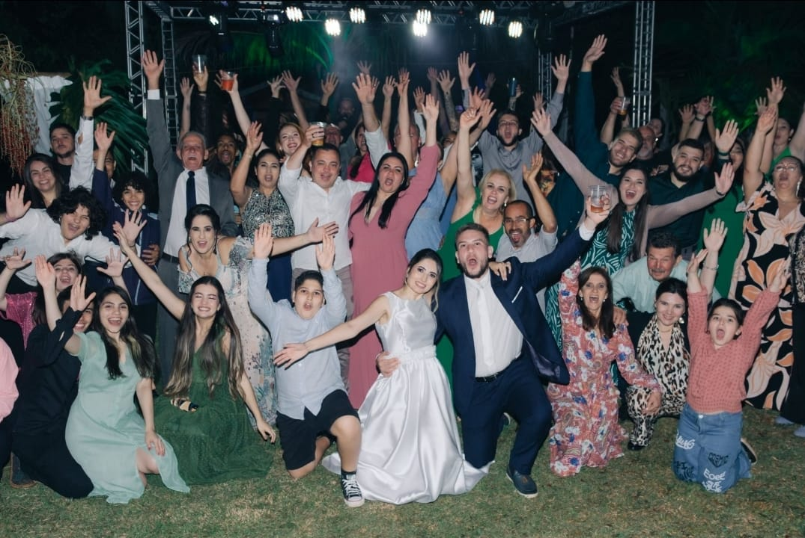

Nossa família tem tudo a ver com manter a realidade e seguir nossas crenças, graças à nossa fé cristã. Dos nossos ancestrais aos nossos membros mais jovens, a espiritualidade sempre foi um grande problema em nossas vidas. Nas nossas reuniões familiares, costumamos falar sobre como a nossa fé nos ajudou a superar momentos difíceis e nos fez felizes. Somos uma família que tenta viver pelo amor, compaixão e perdão que aprendemos nos livros sagrados. Nossa fé nos une e nos inspira a ser melhores e a fazer coisas boas para o mundo.
Quantidades, árvore genealógica, onde estão morando, etc.